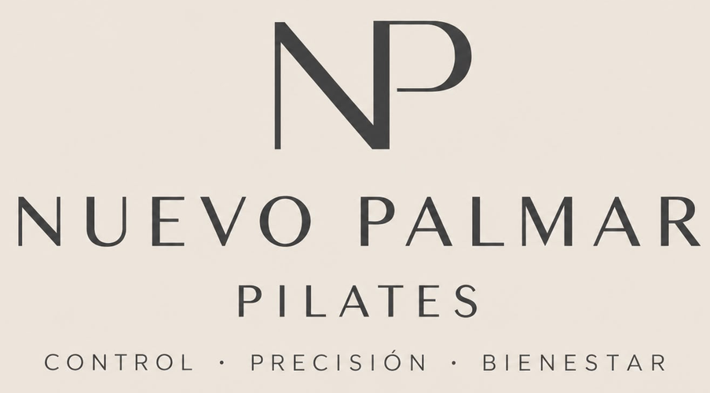

Manual para alumnos
La app de Pilates,
explicada sin líos
Cómo entrar, reservar tu clase, cancelarla si no puedes ir, recuperarla otro día y no perderte ningún aviso. Todo en lenguaje normal, paso a paso.
Clínica de Fisioterapia Nuevo Palmar · Centro de Pilates · C/ Artemisa 6, El Palmar (Murcia)
Si al leer esto te queda alguna duda, pregunta en recepción: te lo enseñan en dos minutos.
Qué vas a encontrar aquí
- 1 Qué es esta app y por qué te interesa
- 2 Instalar la app en el móvil (Android y iPhone)
- 3 Entrar por primera vez (solo se hace una vez)
- 4 Un paseo por la app: qué hay en cada botón
- 5 Reservar una clase
- 6 Cancelar una clase (y la regla de oro)
- 7 Recuperaciones: cómo no perder una clase
- 8 Avisos y notificaciones en el móvil
- 9 Tu perfil: datos, foto y tarifa
- 10 Tus logros y sorpresas
- 11 Preguntas frecuentes y "esto no me funciona"
- 12 Tus datos y tu privacidad, en tres frases
Capítulo 1
Qué es esta app y por qué te interesa
Es la aplicación del centro de Pilates de la Clínica Nuevo Palmar. Con ella puedes, desde el sofá y a cualquier hora:
- Ver el horario de clases y cuántas plazas quedan en cada una.
- Reservar tu plaza y cancelarla si te surge algo.
- Recuperar las clases que canceles con tiempo.
- Leer los avisos del centro (cambios de horario, festivos, novedades).
- Consultar tu tarifa, las sesiones que te quedan y tu historial.
No hay que descargar nada de ninguna tienda
Es una app web: se abre con una dirección de internet, como una página. Luego te enseñamos a dejarla en la pantalla del móvil para que se abra con un toque, como cualquier otra app.
La dirección y cómo dejarla en tu móvil están en el capítulo siguiente.
Funciona en el móvil, en la tablet y en el ordenador. Lo que hagas en uno se ve en los demás al instante.
Capítulo 2
Instalar la app en el móvil (Android y iPhone)
No se descarga de ninguna tienda: se abre una dirección y se deja en la pantalla de inicio. Se hace una sola vez. Después se abre con un toque, sin barra del navegador y con la sesión ya iniciada. En iPhone, además, es imprescindible para recibir avisos.
La dirección de la app es:
https://www.fisioterapianuevopalmar.com/app/
También se llega desde la web de la clínica con el botón ÁREA PILATES de arriba.
La app te lo recuerda sola
La primera vez que abres la dirección en el móvil, a los pocos segundos aparece abajo un aviso: "Ten la app en tu pantalla de inicio".
En Android basta con tocar Instalar y confirmar. En iPhone el aviso te enseña los dos pasos y una flecha señala el botón Compartir de Safari (Apple no deja que ninguna web se instale sola). Si tocas "Ahora no", no vuelve a salir en 30 días.
Si la instalaste antes de octubre de 2026
La app estaba antes en otra dirección (idoctor2000.github.io). Si tu icono es de entonces, bórralo e instálala de nuevo desde www.fisioterapianuevopalmar.com/app, y vuelve a activar los avisos en el móvil. Tu cuenta y tus reservas siguen igual.
¿Quieres pasársela a alguien?
Dentro de la app, el icono de código QR de la cabecera muestra un código que abre la app con la cámara del móvil. Puedes compartirlo por WhatsApp o enseñarlo en tu pantalla para que lo escaneen.
Android (Chrome)
- Abre Chrome y entra en la dirección de la app.
- Toca los tres puntos de arriba a la derecha.
- Elige Instalar aplicación (en algunos móviles pone "Añadir a pantalla de inicio").
- Confirma con Instalar. Ya tienes el icono "NP" en tu pantalla, como una app más.
Atajos: muchas veces Chrome muestra abajo un aviso que dice "Instalar Nuevo Palmar Pilates"; con tocarlo basta. Y dentro de la app, en Perfil (los clientes) hay un botón Instalar la app en tu móvil que hace lo mismo.
Si usas el navegador de Samsung en vez de Chrome: menú de las tres rayas abajo a la derecha → Añadir página a → Pantalla de inicio.
iPhone y iPad (Safari)
- Abre la dirección de la app en Safari (no en Chrome: en iPhone solo funciona desde Safari).
- Toca el botón Compartir: el cuadrado con una flecha hacia arriba, en la parte de abajo de la pantalla.
- Baja por la lista y elige Añadir a pantalla de inicio.
- Toca Añadir. ¡Listo!
Ordenador (Windows o Mac)
Abre la dirección en Chrome o Edge. A la derecha de la barra de direcciones aparece un icono pequeño de instalar (una pantalla con una flecha). Tócalo y confirma. También puedes usarla sin instalar, como una página normal.
Para que suene el móvil con los avisos
Una vez instalada, abre la app desde el icono, ve a Perfil (clientes) o a Más (equipo) y activa Avisos en el móvil. Cuando el móvil pregunte si permites las notificaciones, di que sí.
Capítulo 3
Entrar por primera vez (solo se hace una vez)
Antes de nada, en recepción te han dado de alta con tu correo electrónico. Ese correo es tu llave: la app te reconoce por él. Si no recuerdas cuál diste, pregunta.
Opción A: con una contraseña
- Abre la app (desde el icono que instalaste en el capítulo 2 o con la dirección).
- Toca ¿Es tu primera vez? Crear mi contraseña.
- Escribe el mismo correo que diste en recepción y toca Enviar enlace.
- Abre tu correo. Te ha llegado un mensaje con un enlace. Si no lo ves, mira en Spam o Correo no deseado.
- Toca el enlace desde el mismo móvil u ordenador en el que vas a usar la app.
- Escribe la contraseña que quieras (apúntala en un sitio seguro) y toca Guardar contraseña.
- La primera vez te pedirá aceptar la política de privacidad. Marca la casilla y entra. Ya está.
Opción B: con tu cuenta de Google (más rápida)
Si el correo que diste en recepción es de Gmail, no hace falta inventar contraseñas: toca Entrar con Google, elige tu cuenta y listo. Solo tiene una condición: que sea el mismo correo que tienen en tu ficha.
Si sale "Tu usuario aún no está dado de alta en el centro"
Significa que has entrado con un correo que no coincide con el de tu ficha. No pasa nada: dile en recepción el correo que has usado, lo anotan en tu ficha y vuelves a entrar.
¿Se te ha olvidado la contraseña?
Toca de nuevo Crear mi contraseña, escribe tu correo y te llega otro enlace para poner una nueva. No hace falta llamar a nadie.
Capítulo 4
Un paseo por la app: qué hay en cada botón
Al entrar verás una barra abajo con cinco botones grandes. En el ordenador, esos mismos botones están en una columna a la izquierda.
| Botón | Para qué sirve |
|---|
| Inicio | Tu resumen del día: fotos del centro, tu próxima clase, los avisos nuevos y un acceso rápido a reservar. |
| Horario | Todas las clases del centro, por día, semana o mes. Desde aquí se reserva. |
| Mis clases | Tus reservas (próximas y pasadas) y tus recuperaciones. Desde aquí se cancela. |
| Avisos | Los mensajes del centro. Si hay alguno sin leer, aparece un numerito. |
| Perfil | Tus datos, tu foto, tu tarifa, las notificaciones y cerrar sesión. |
Arriba a la izquierda está el menú ≡ con todas las secciones, por si prefieres verlo todo en una lista. Y arriba a la derecha, el botón de ayuda ? abre este mismo manual.
Un truco para no perderte
Si en algún momento no sabes dónde estás, toca Inicio. Desde ahí se llega a todo con un toque.
Capítulo 5
Reservar una clase
- Toca Horario.
- Elige cómo quieres verlo: Día, Semana o Mes. Con las flechas pasas al siguiente o al anterior; con "Hoy" vuelves al día de hoy.
- Toca la clase que te interese. Verás la actividad, la hora, quién la da y cuántas plazas quedan.
- Toca Reservar. La app te dice qué va a usar: una clase de tu tarifa semanal, una sesión de tu bono o una recuperación.
- Confirma. La clase aparece ya en Mis clases y en Inicio.
Las reglas del juego (para que no te pille de sorpresa)
- Antelación. Solo se puede reservar con unos días de antelación (el centro decide cuántos; la app te lo dice si te pasas).
- Tu tarifa manda. Si tienes dos clases a la semana, podrás reservar dos esa semana. Si tienes un bono, cada reserva descuenta una sesión.
- Actividades. Cada tarifa incluye unas actividades: las de clases dirigidas (suelo, funcional, geronto, barre, yoga, stretching…) no incluyen Reformer, y las de Reformer no incluyen las dirigidas. El Pack mixto tiene una de cada. Si una clase no entra en la tuya, la app te lo dice con un mensaje tipo "Tu tarifa no incluye Reformer". Hay Reformer desde 1 día a la semana: pregunta en recepción.
- Plazas. Si no quedan, no se puede reservar. Las clases de Reformer son de 6 plazas y el resto de 8.
- Una vez por clase. No puedes reservar dos veces la misma clase (la app lo avisa).
¿Tienes turno fijo?
Si en recepción te apuntaron a un turno fijo (por ejemplo, lunes y miércoles a las 10:00), tus reservas se hacen solas cada semana. Solo tienes que entrar a cancelar los días que no puedas ir.
Capítulo 6
Cancelar una clase (y la regla de oro)
- Toca Mis clases (o búscala en el Horario, da igual).
- Toca la clase a la que no vas a poder ir.
- Toca Cancelar mi plaza y confirma.
La regla de oro
Si cancelas con tiempo, la clase no se pierde: se convierte en una recuperación que puedes usar otro día. Si cancelas demasiado tarde, la clase se da por consumida.
Cuánto es "con tiempo" lo fija el centro en minutos de antelación. La propia app te lo recuerda antes de confirmar la cancelación, y en Mis clases → Recuperaciones ves el plazo exacto.
Otras cosas que conviene saber:
- Una clase que ya ha empezado no se puede cancelar.
- Si es el centro quien cancela la clase (por ejemplo, por una baja), te llega un aviso y la clase se te devuelve siempre como recuperación, hayas cancelado o no.
- Si te equivocas, puedes volver a reservar la misma clase mientras queden plazas.
Capítulo 7
Recuperaciones: cómo no perder una clase
Una recuperación es un "vale por una clase" que te dan cuando cancelas con tiempo o cuando el centro cancela una clase tuya.
Dónde las veo
En Mis clases, pestaña Recuperaciones. Ahí están las disponibles, las que ya has usado y las caducadas, con su fecha de caducidad.
Cómo las uso
No tienes que hacer nada especial. Cuando reserves una clase que tu tarifa semanal no cubre (porque ya has hecho tus clases de la semana, por ejemplo), la app te dirá "Se utilizará una recuperación". Confirmas y listo.
Cosas que debes saber
- Caducan. El centro decide si caducan a los X días o al terminar tu tarifa. La fecha sale junto a cada una.
- Hay un máximo. Cada tarifa permite tener un número de recuperaciones pendientes. Si lo alcanzas, las nuevas cancelaciones no generan más. La solución es sencilla: úsalas.
- Misma actividad. Normalmente una recuperación de Pilates se usa en Pilates. Si tu tarifa permite usarla en otra actividad, la app ya lo tiene en cuenta.
- Si tienes una situación especial (una baja larga, por ejemplo), en recepción pueden autorizarte una recuperación excepcional.
Capítulo 8
Avisos y notificaciones en el móvil
El centro publica avisos en la app: un cambio de hora, un festivo, una clase que se cancela, una novedad. Los ves en Avisos y los más recientes también en Inicio.
Para que te suene el móvil cuando haya un aviso
- Ve a Perfil y busca el apartado Avisos en el móvil.
- Activa el interruptor.
- El móvil te preguntará si permites las notificaciones. Di que sí (Permitir).
- Toca Enviar notificación de prueba. Si te llega, perfecto.
En iPhone hay una condición
Las notificaciones solo funcionan si la app está instalada en la pantalla de inicio (capítulo 2) y la abres desde ese icono. Si la abres desde Safari, no llegarán.
Si cambias de móvil, repite estos pasos en el nuevo. Y si no quieres recibir más avisos, desactiva el interruptor.
Capítulo 9
Tu perfil: datos, foto y tarifa
En Perfil tienes:
- Mis datos. Teléfono y correo. Puedes cambiarlos tú mismo con Editar, y ahí también puedes poner tu fecha de nacimiento (opcional, solo para felicitarte). El nombre y el DNI, por seguridad, solo los cambian en recepción.
- Tu foto. Toca el círculo con tu inicial y elige una foto. Así los monitores te reconocen al pasar lista. Es opcional.
- Mi tarifa. Qué tarifa tienes, hasta cuándo, cuántas clases o sesiones te quedan y qué actividades incluye.
- Tarifas del centro. Todas las tarifas disponibles con su precio, por si quieres cambiar. El cambio se hace en recepción.
- Mis logros. Tus medallas y trofeos (capítulo 10).
- Avisos en el móvil. El interruptor de las notificaciones (capítulo 8).
- La app en tu móvil. El botón para instalarla (capítulo 2).
- Sesión. Para cerrar sesión. Solo hace falta si usas un móvil que no es tuyo.
Capítulo 10
Tus logros y sorpresas
Venir a clase ya tiene premio (tu espalda te lo agradece), pero además la app te tiene preparadas unas cuantas sorpresas.
Medallas
Según vas haciendo clases, ganas medallas sin hacer nada especial. Cuenta cada clase que tenías reservada, que se dio (no se canceló), a la que fuiste y que ya ha empezado. Hay 12:
- Primera clase, y luego 10, 25, 50, 100 y 200 clases.
- Semana completa: hacer en una semana todas las clases de tu tarifa.
- Racha de 4 semanas y racha de 12 semanas seguidas viniendo a clase.
- Madrugador/a: 10 clases antes de las 10:00.
- Explorador/a: probar 3 actividades distintas.
- Un año con nosotros: un año desde tu primera clase.
Cuando consigues una nueva, al abrir la app te sale una celebración con confeti. Todas están en Perfil → Mis logros: las que aún no tienes salen en gris con lo que te falta (por ejemplo, "Te quedan 3 clases").
Tu cumpleaños
Si quieres, dinos cuándo es tu cumple. En Inicio te sale la tarjeta "¿Cuándo es tu cumple?" (si no te apetece, la cierras y listo), y también puedes ponerlo en tu Perfil (Mis datos → Editar). Es opcional. Ese día, al abrir la app, te espera una felicitación con globos y confeti… y puede que alguna sorpresa más en clase.
"Tu año en Pilates"
A final de año (normalmente del 15 de diciembre al 15 de enero), si has hecho 5 clases o más, la app te enseña tu resumen del año en pantallas que pasan solas, como las historias de Instagram. Toca a la derecha para avanzar y a la izquierda para volver. Verás tus clases y horas del año, tu actividad favorita, si eres más de mañanas o de tardes, tu mes más activo, tu mejor racha y el monitor con el que más has coincidido. Al final, con Compartir mi año creas una imagen para Instagram. ¡Menciona a @pilatesnuevopalmar!
Sale sola una vez; si quieres volver a verlo, tienes una tarjeta en Inicio.
El reto del mes
Si tienes una tarifa activa, en Inicio verás el reto de cada mes con una barra que se va llenando. Por ejemplo: "Reto de octubre: haz 8 clases este mes y opta a cliente del mes". El objetivo son tus clases por semana × 4: si vienes 2 días a la semana, 8 clases.
Cliente del mes
Cada mes el centro elige a un cliente del mes entre las personas más constantes. Si te toca a ti:
- Te llega un aviso al móvil (queda guardado en Avisos) y, al abrir la app, una celebración con trofeo y confeti.
- La app te pregunta "¿Quieres que los demás alumnos lo vean en la app?". Tú decides: Sí, que se vea o Prefiero que no. Si no contestas en ese momento, puedes hacerlo luego desde la tarjeta de Inicio.
- Si dices que sí, los demás alumnos verán en su Inicio algo como "Cliente del mes de septiembre: María G.": solo tu nombre y la inicial de tu apellido, nada más.
- Tus trofeos quedan para siempre en Perfil → Mis logros.
Lo importante no es la medalla
Es venir con constancia: es lo que de verdad nota tu cuerpo. Las medallas solo te lo recuerdan con un poco de alegría.
Capítulo 11
Preguntas frecuentes y "esto no me funciona"
- No me llega el correo para crear la contraseña.
- Mira en Spam o Correo no deseado. Espera un par de minutos. Comprueba que has escrito bien el correo y que es el mismo que diste en recepción. Si sigue sin llegar, pregunta en recepción qué correo tienen anotado.
- He entrado pero dice que no estoy dado de alta.
- Has usado un correo distinto del de tu ficha. Díselo en recepción para que lo cambien. No hace falta que vuelvas a crear nada.
- No veo mi tarifa, o pone que no tengo tarifa activa.
- En recepción te la asignan en un momento. Hasta entonces podrás ver el horario pero no reservar.
- No me deja reservar.
- Lee el mensaje que sale: casi siempre lo explica (no quedan plazas, ya has hecho tus clases de la semana, la clase es de otra actividad, es demasiado pronto para reservar…).
- He cancelado y no me ha dado recuperación.
- Probablemente cancelaste con menos antelación de la que marca el centro, o ya tenías el máximo de recuperaciones pendientes. Lo ves en Mis clases → Recuperaciones.
- No me llegan las notificaciones.
- Revisa que el interruptor esté activado en Perfil y que el móvil tenga permitidas las notificaciones para la app. En iPhone, que esté instalada en la pantalla de inicio. Prueba con "Enviar notificación de prueba".
- La app se ve rara o parece antigua.
- Ciérrala del todo y vuelve a abrirla. Las novedades se actualizan solas al abrirla.
- ¿Puedo usarla en el ordenador?
- Sí, con la misma dirección y el mismo correo. Verás lo mismo que en el móvil.
- ¿Se paga desde la app?
- No. Se paga en el centro, como siempre (efectivo, tarjeta, Bizum, transferencia o domiciliación), y en recepción lo apuntan. Si tienes dudas sobre lo que llevas pagado o te queda, pregunta allí. Y pregunta también por la oferta trimestral y la familiar.
Capítulo 12
Tus datos y tu privacidad, en tres frases
- Tus datos (nombre, contacto, reservas) los usa solo el centro para gestionar tus clases. La responsable es Nuria Lorenzo García, titular de la Clínica de Fisioterapia Nuevo Palmar.
- Nadie fuera del centro los ve, y no se usan para publicidad. Tu fecha de nacimiento es opcional y solo sirve para felicitarte el día de tu cumpleaños. Si eres cliente del mes, los demás alumnos solo ven tu nombre y la inicial de tu apellido, y únicamente si tú dices que sí.
- Puedes pedir ver, corregir o borrar tus datos cuando quieras: en recepción o por correo. El texto completo está en la app, en el menú ≡ → Política de privacidad.
Gracias por confiar en nosotros. Nos vemos en clase.